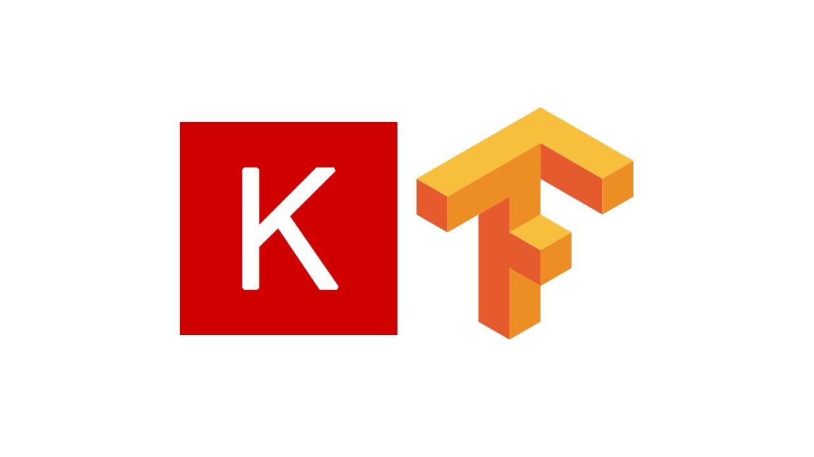

Rerouting Studies
My research work on vehicle rerouting. Implement the EBkSP algorithm using python and SUMO and run it with different traffic prediction models to compare them.
Used tools:

splash-drawer
A pix2pix model trained to generate League of Legends splash arts from sketches.
Used tools:

animal-description-classifier
A text classifier that maps sentences to animals in Animal-10 dataset.
Used tools:


Classyfier
A (not that good) classifier that uses computational geometry for machine learning.
Used tools:
Playlist Assembler
A web tool that given a list of songs, creates a playlist on your streaming service account.
More Details (portuguese)Used tools:
MonDeP-SFT
Request management system and data processing via Node and MongoDB (Atlas)
More Details (portuguese)Used tools:

Other projects in my GitHub.